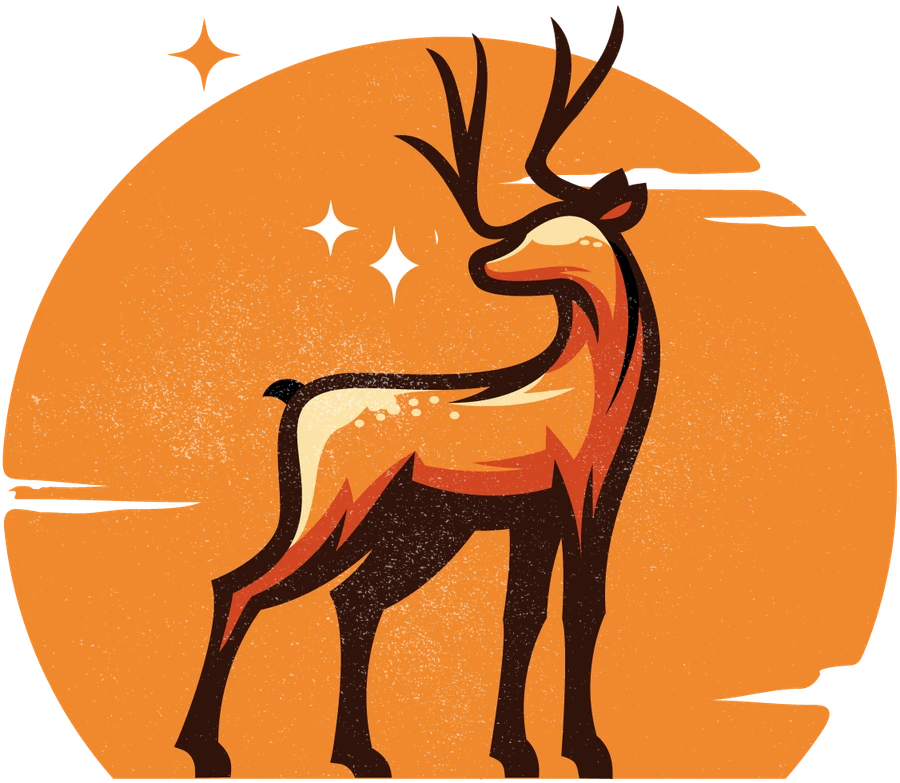

כדי שבערב עצמו נתחיל לעבוד מהדקה הראשונה.
רק מתקינים. את העבודה עם קלוד עצמו מתחילים יחד ברביעי.
מורידים את Claude למחשב ונכנסים עם החשבון. צריך מנוי בתשלום, Pro: 20 דולר לחודש, ואפשר לבטל.
בצד של החלון יש לשונית Code, והיא נפתחת בלי לבקש לשדרג. בינתיים לא כותבים לו כלום.
דרכו קלוד מריץ פקודות במחשב, ואיתו הוא שומר גרסאות שאפשר לחזור אליהן.
מורידים, ו-Next עד הסוף בלי לשנות כלום.
איתו קלוד בונה אקסל, Word ו-PDF, ועורך תמונות.
במסך הראשון של ההתקנה מסמנים ✔ Add python.exe to PATH, ורק אז Install Now.
עוד כלי שקלוד משתמש בו כשהוא בונה אתרים, מסמכים ומצגות.
מורידים, ו-Next עד הסוף בלי לשנות כלום.
איתו קלוד עורך וידאו וקול.
לוחצים על התחל, כותבים PowerShell ופותחים. מדביקים את השורה הזאת ולוחצים Enter:
המחסן של התוכנות במק. ממנו מתקינים את כל השאר.
פותחים את האפליקציה Terminal (מחפשים אותה ב-Spotlight), מדביקים בה את השורה הזאת ולוחצים Enter:
הוא מבקש את הסיסמה של המק. התווים לא מופיעים כשמקלידים: מקלידים בכל זאת ולוחצים Enter. ההתקנה לוקחת כמה דקות טובות.
בסוף כתוב Next steps, עם כמה שורות. מעתיקים אותן כמו שהן לאותו Terminal ומריצים.
Git, Python, Node ו-ffmpeg: התוכנות שקלוד עובד איתן כשהוא בונה אקסל ומסמכים, אתרים, ועורך וידאו.
באותו Terminal, מדביקים ולוחצים Enter:
בסוף: מפעילים את המחשב מחדש.
כל התקנה נגמרה בהודעה שהיא הצליחה, בלי שגיאה באדום.
אם אין לכם, מורידים. בערב נחבר אליו את קלוד, כדי שיוכל לעבוד גם בדפדפן.
בפרתיה עובדים מהטלפון. מפעילים בטלפון נקודה חמה (Hotspot), ומחברים אליה את המחשב.
המחשב גולש דרך הטלפון.